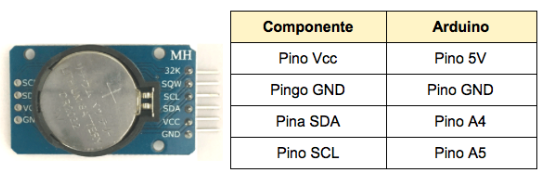

Estudo introdutório ao módulo RTC.
No decorrer do projeto a equipe percebeu que para registrar o horário em que são coletados os dados se precisaria de um outro componente, pois, o relógio interno do microcontrolador Arduino uno possui atrasos muito grandes que podem ocasionar problemas futuramente. Desta forma, foi definido que o componente ideal para a solução deste empecilho foi o RTC DS3231.
O RTC (Real Time Clock) funcionará em conjunto com o Arduino Uno da seguinte maneira: O arduino irá acionar um delay de 60 segundos e paralelamente o módulo RTC estará contabilizando as horas a partir do horário inicial pré-estabelecido. Ao término desse ciclo de 60s o arduino realizará uma comparação com o horário capturado pelo RTC e o horário escolhido pelo usuário, caso os horários se coincidem o módulo coletor realiza a transmissão dos dados. É importante frisar que o módulo RTC não fará a interrupção ou o controle de quando se irá realizar a coleta, o seu objetivo é atuar somente como um relógio contabilizando o tempo normalmente.
Para instalação do hardware foi conectado alimentação Vcc de 5V e gnd, ambos cedidos pelo arduino, já os pinos SDA e SCL foram conectados nos pinos A4 e A5 respectivamente como mostra figura abaixo. Esses dois últimos pinos citados são referentes à interface I2C de comunicação serial onde, SDA representa a entrada de dados e SCL é o sinal responsável pelo clock. O componente se situa na estação remota, ou seja, a estação que irá transmitir os dados coletados pelo sensor.

Para poder explorar sua principal função no projeto, será necessário utilizar uma biblioteca específica desenvolvida para ele que está disponível aqui, onde nela é possível captar as horas, minutos e segundos (todos em formato de inteiro) assim como o dia, mês e ano (em formato de string).
